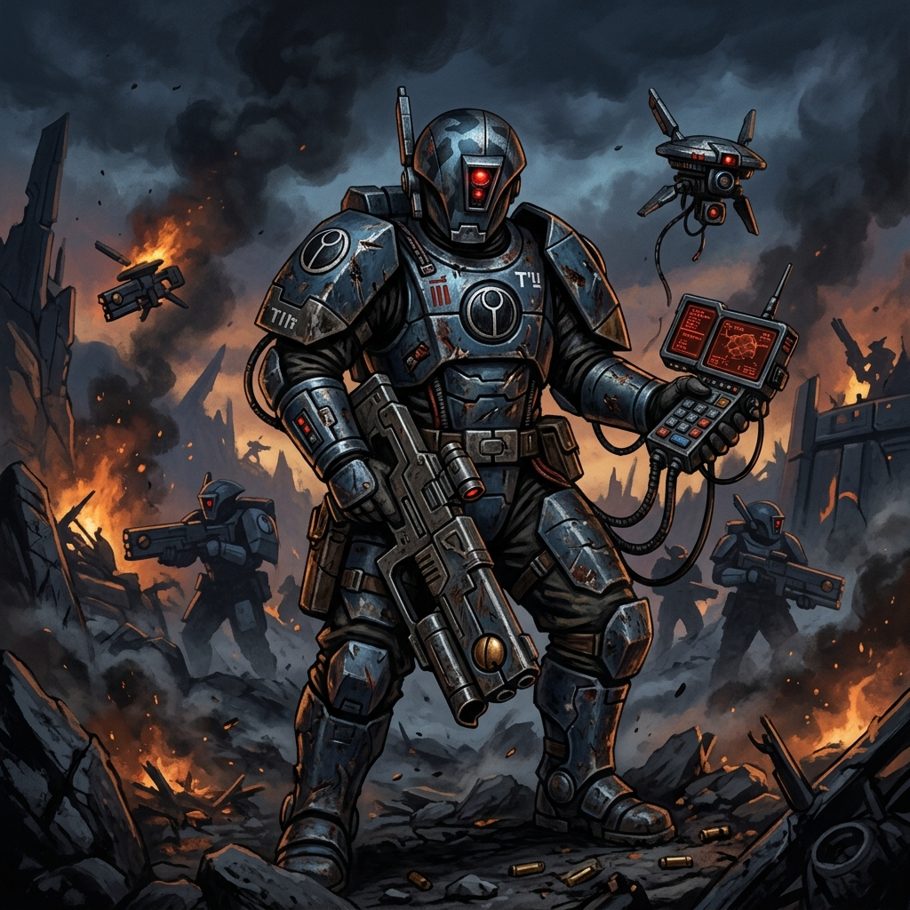
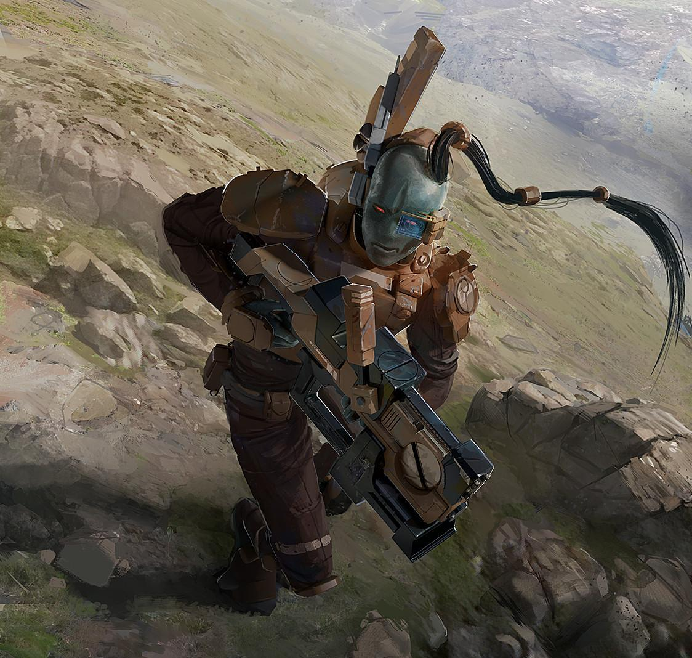
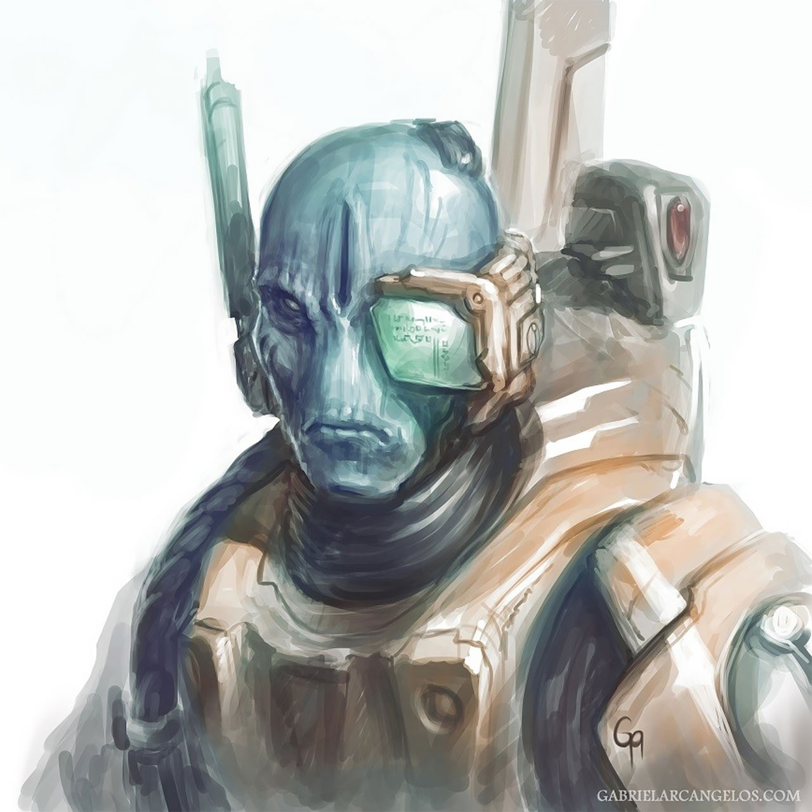

SUBCOMANDANTE DARKSTRIDER
Líder Especialista Pathfinder • Mestre da Furtividade • O Lobo Solitário de T'au

Origem
O Subcomandante El'Myrmidon, mais conhecido por seu nome de guerra, Darkstrider, não é um líder típico do Império T'au. Nascido na Casta do Fogo, ele rejeitou precocemente as táticas rígidas de batalha em massa e artilharia estática, optando por se tornar um especialista em infiltração no esquadrão dos Pathfinders (Batedores).
Sua recusa em aceitar a doutrina militar cega o colocou várias vezes em conflito com os superiores da Casta do Fogo. Darkstrider chegou a recusar inúmeras promoções, argumentando que sua presença seria mais valiosa na linha de frente liderando esquadrões de infiltração do que vestido em uma grande e barulhenta armadura de batalha Battlesuit.
Ao longo da Terceira Esfera de Expansão e nas guerras contra o Império da Humanidade e as hordas alienígenas, o estilo não convencional de Darkstrider salvou inúmeros guerreiros T'au. Ele atua como os olhos e ouvidos mortais do exército, operando tão profundamente no território inimigo que as frotas de guerra confiam em suas coordenadas como a palavra suprema da morte tática.

Credo de Guerra
"Enquanto os comandantes gritam ordens brilhantes e nossos mechas tremem a terra, eu já estou atrás das linhas do inimigo. A verdadeira guerra é ganha antes que o primeiro tiro seja disparado."
Para Darkstrider, o Bem Maior (Tau'va) é melhor servido nas sombras. Ao contrário de Comandantes como Shadowsun que operam como ícones visíveis de esperança, ele age como um caçador cirúrgico, preferindo sabotagens e emboscadas desleais.
Ele lidera com autonomia quase total, ensinando aos seus Pathfinders que a criatividade sob fogo é melhor que a obediência cega. Onde um oficial T'au pediria um bombardeio massivo em uma trincheira, Darkstrider infiltraria o perímetro e colocaria cargas de fusão direto nos depósitos de munição inimiga.
Seus métodos pouco ortodoxos levantam dúvidas nos Ethereals, mas a sua incrível e insana taxa de sobrevivência e sucesso tático garante que seus talentos sombrios continuem a ser aproveitados e temidos.
Capacidade Bélica
- O Analisador Estrutural: Usa um dispositivo customizado altamente avançado que identifica fraquezas minúsculas na armadura e biologia do alvo, transmitindo-as instantaneamente para todo o esquadrão explorar.
- Carabina de Pulso (Pulse Carbine): Empregada com letal precisão para eliminar guardas, silenciar vigias e garantir rotas de fuga com cobertura de fogo fotônico.
- Drones de Reconhecimento: Frequentemente lidera Drones batedores customizados que cobrem sua retaguarda e aumentam ainda mais a percepção da sua equipe de infiltração.
- Guerra de Guerrilha: Mestre da doutrina T'au Kauyon (O Caçador Paciente), atraindo os inimigos para zonas de abate implacáveis onde são obliterados em fogo cruzado.
- Armadura Pathfinder Leve: Diferente de outros oficiais, ele recusa Battlesuits como os modelos Crisis, preferindo armaduras leves que permitem movimentação absoluta em silêncio.
Localização Atual: Linhas de frente da Quinta Esfera de Expansão.
Status: Ativo - Operando no coração do território Imperial e Ork, liderando missões de sabotagem cruciais.
